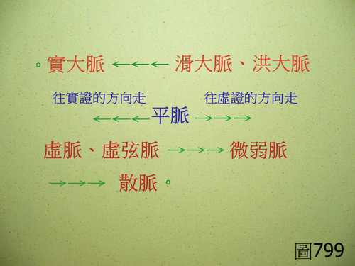

脈理醫理學 33.26.1：實脈、滑大脈（或洪大脈）、平脈、虛脈（或虛弦脈）、微弱脈、散脈在脈譜週期表上的排列序列位置
作者：陳建元
脈譜週期表的定義：
將28脈按照其前後演變的相關連性，仿化學週期表的概念，排列成彼此前後相關的一直線以釐清各種脈象之間的相對關係與前後演變的邏輯意義，以便用來瞭解病況的走向與指導臨床的用藥，謂之「脈譜週期表」。
實脈、滑大脈（或洪大脈）、平脈、虛脈（或虛弦脈）、微弱脈、散脈在脈譜週期表上是有其前後演變的邏輯意義的，茲將其前後的演變方向順序排列如下〈圖799〉：

。實脈 ←←← 滑大脈（或洪大脈）←←←
〈往實證的方向走〉平脈〈往虛證的方向走〉
→→→ 虛脈（或虛弦脈）→→→ 微弱脈 →→→ 散脈。
【引用請先來信告知徵求同意，若有涉及販售營利等商業行為，版權所有拷貝盜用必究。】
【藥王脈學講壇】http://blog.xuite.net/drjychen/twblog